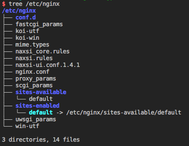

Nginx 学习笔记
记录学习
Nginx过程中的一些知识
基础
简介
Nginx通常作为代理服务器. Nginx有一个master进程和若干个worker进程. master进程负责读取和处理配置configuration并维护worker进程的运行情况. worker负责处理具体的某个请求.
Nginx的配置文件通常为nginx.conf，通常放置在/usr/local/nginx/conf, /etc/nginx, /usr/local/ect/nginx下面。下图即为目录结构。

Nginx支持以下负载均衡机制
- round-robin/轮询：到应用服务器的请求以round-robin的方式被分发
least-connect/最少连接：下一个请求被分配到活动连接数量最少的服务器- ip-hash/IP散列: 使用hash算法来决定下一个服务器请求要选择哪一个服务器
根据不同的负载均衡机制，需要在nginx的对应upstream模块中配置不同least_conn, ip_hash。
xxxxxxxxxxhttp { upstream myapp1 { //ip_hash, least_conn; server srv1.example.com; server srv2.example.com; server srv3.example.com; } server { listen 80; location / { proxy_pass http://myapp1; } }}
命令
nginx -s quit: 退出关闭nginxsudo /etc/init.d/nginx restart更新了nginx配置之后重启sudo openssl req -x509 -nodes -days 36500 -newkey rsa:2048 -keyout /etc/nginx/ssl/nginx.key -out /etc/nginx/ssl/nginx.crt创建SSL证书.
配置
配置https, 同时接受http
xxxxxxxxxx midas.conf server { # the port your site will be served on listen 80; listen 443 ssl; # the domain name it will serve for server_name midas46.com; # substitute by your FQDN and machine's IP address charset utf-8; #Max upload size client_max_body_size 75M; # adjust to taste # Django media location /media { alias /var/www/path/to/your/project/media; # your Django project's media files } # location /assets { # alias /var/www/path/to/your/project/static; # your Django project's static files # } ssl_certificate /etc/nginx/ssl/nginx.crt; ssl_certificate_key /etc/nginx/ssl/nginx.key; # Finally, send all non-media requests to the Django server. location / { proxy_pass http://0.0.0.0:7000; proxy_set_header Host $host; proxy_set_header X-Real-IP $remote_addr; proxy_set_header X-Forwarded-For $proxy_add_x_forwarded_for; } }问题
1. Nginx如何处理一个请求?
stackoverflow-how-does-nginx-handle-http-requests
首先Nginx在生产环境部署使用的多为多进程模式，会有一个master进程，和多个worker进程。master进程用来接收来自外界的信号，向各个worker进程发送信号，监控worker进程的运行状态，当worker进程出现异常时，master进程则会重启进程。而最基本的网络事件，则放在了worker进程中来处理。一个请求只能在一个nginx worker中处理，通常来说nginx worker进程的数量与cpu核心数一致（过多的nginx worker进程会导致竞争cpu资源，从而带来不必要的上下文切换，并且nginx为了更多的利用多核特性，提供了cpu亲缘性的绑定）。
在处理Http请求方面，Nginx使用reactor模型。是一个单进程事件驱动模型，事件驱动的主循环会一直等待直到OS触发了可读，可写事件。事件触发之后，会调用相应的事件处理函数，来具体处理请求。
首先Nginx部署运行为多进程模型，而worker进程之间又是平等的，每个进程，处理请求的机会也相等，那么当一个请求过来时，是如何做的请求被一个worker所处理呢？首先，每个worker进程都是从master进程fork过来的，在master进程里面，先建立好需要listen的socket（listenfd）之后，再fork出多个worker进程。所有worker进程的listenfd会在新连接到来时变成可读。为了保证只有一个进程处理该连接，所有worker进程在注册listenfd读事件前抢accept_mutex, 抢到互斥锁的那个进程注册listenfd读事件，在读事件例调用accept接收该连接，然后进行读取请求，解析请求，处理请求，返回响应。
对于Nginx整个事件处理机制，伪代码如下，和redis有点类似，都包含了时间事件，和网络事件（文件事件），且时间事件并不是fork一个线程的实现，而是在整个事件处理机制中。下面是nginx事件处理模型的伪代码。epoll_wait函数在调用的时候可以设置一个超时时间timeout，因此nginx借助这个超时时间来实现定时器，也就是时间事件。nginx中的定时器是放在一颗维护定时器的红黑树里. (注意：redis事件循环使用一个链表维护时间事件，redis时间事件数量较小，且作者antirez也说明了如果使用skip-list会在时间复杂度上面更优, 这里与nginx事件机制有异曲同工之妙)，每次进入epoll_wait之前，会从该红黑树里拿到所有定时器事件的最小时间，在此基础上会计算epoll_wait的timeout。也就是说如果没有网络事件产生，epoll就会超时，然后会检查定时器是否超时，然后处理所有的超时事件，并将其状态置为超时，然后再继续处理网络事件。
xxxxxxxxxxwhile (true) { for t in run_tasks: t.handler(); update_time(&now); timeout = ETERNITY; // 处理时间事件 for t in wait_tasks: /* sorted already */ if (t.time <= now) { t.timeout_handler(); } else { // 计算epoll-wait的超时时间 timeout = t.time - now; break; } // 处理网络事件，epoll调用 nevents = poll_function(events, timeout); // 返回触发的文件描述 for i in nevents: task t; if (events[i].type == READ) { // 注册读的回调函数 t.handler = read_handler; } else { /* events[i].type == WRITE */ // 注册写回调函数 t.handler = write_handler; } // 执行回调函数 run_tasks_add(t);}2. keepalive支持
http1.0和http1.1(默认)支持长连接。实现Http/1.0 keepalive连接的客户端可以通过包含Connection:Keep-Alive首部请求将一条连接保存在打开的状态。如果服务端最后决定是keepalive打开，那么在响应的http头里面，也会包含Connection:Keep-Alive, 否则就是Connection: Close. 如果是connection: close, 则nginx在响应完数据之后，会主动关闭连接。所以，对于请求量比较大的nginx来说，关掉keep-alive会产生比较多的socket time-wait状态。
keepalive的本质其实是在一个TCP socket上面，复用多个Http连接的请求。要实现这个功能的前提条件是，必须得确定请求头与响应体的长度。
- 对于Http1.0协议，响应头中
content-length即可以知道body的长度，接收完后，就表示这个请求完成了。而如果没有content-length头（流式数据），则客户端会一直接收数据，直到服务器主动断开连接，才表示body接收完毕 - 对于Http1.1协议，如果响应头中的Transfer-encoding为chunked传输，则表示body是流式输出，body会被分成多个块，每块的开始会标识出当前块的长度，此时，body不需要通过content-length来指定，客户端会接收数据直到服务端主动断开连接
3. Transfer-encoding: chunked 分块编码
分块编码，主要用于处理流式数据，允许服务器把主体body逐块发送，并表明每块的大小。分块编码非常简单，由起始的Http响应首部块开始，随后是一系列的分块。每个分块包含一个长度值(hex)，和该块的数据。具体如下图所示，最后一个块有一个特定，长度值为，表面此次流式数据传输结束。

Reference